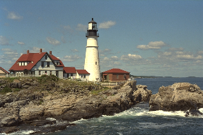
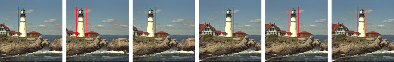
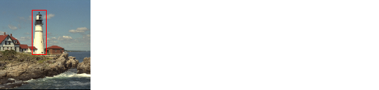
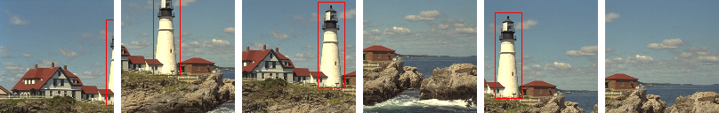

Spatial transformations
DataAugmentation.jl comes with various spatial transformations that you
can apply to your data. You can apply them to Images and
the keypoint-based items Keypoints, Polygon, and BoundingBox.
Let’s take this picture of a light house:
imagedata = testimage("lighthouse")

To apply a transformation tfm to it, wrap it in
Image, apply the transformation and unwrap it using itemdata:
tfm = Crop((196, 196))
image = Image(imagedata)
apply(tfm, image) |> itemdata
Now let’s say we want to train a light house detector and have a bounding box
for the light house. We can use the BoundingBox item to represent it.
It takes the two corners of the bounding rectangle as the first argument. As
the second argument we have to pass the size of the corresponding image.
points = SVector{2, Float32}[SVector(23., 120.), SVector(120., 150.)]
bbox = BoundingBox(points, size(imagedata))
BoundingBox{2, Float32}()showitem visualizes the two items:
showitem((image, bbox))

If we apply transformations like translation and cropping to the image, then the same transformations have to be applied to the bounding box. Otherwise, the bounding box will no longer match up with the light house.
Another problem can occur with stochastic transformations like RandomResizeCrop.
If we apply it separately to the image and the bounding box, they will be cropped from
slightly different locations:
tfm = RandomResizeCrop((128, 128))
showitem((
apply(tfm, image),
apply(tfm, bbox)
))
Instead, pass a tuple of the items to a single apply call so the same
random state will be used for both image and bounding box:
apply(tfm, (image, bbox)) |> showitem
Gallery
RandomResizeCrop(sz)
Resizes the sides so that one of them is no longer than sz and
crops a region of size sz from a random location.
tfm = RandomResizeCrop((128, 128))

CenterResizeCrop
Resizes the sides so that one of them is no longer than sz and
crops a region of size sz from the center.
tfm = CenterResizeCrop((128, 128))

Crop(sz[, from])
Crops a region of size sz from the image, without resizing the image first.
using DataAugmentation: FromOrigin, FromCenter, FromRandom
tfms = [
Crop((128, 128), FromOrigin()),
Crop((128, 128), FromCenter()),
Crop((128, 128), FromRandom()),
Crop((128, 128), FromRandom()),
Crop((128, 128), FromRandom()),
Crop((128, 128), FromRandom()),
]
